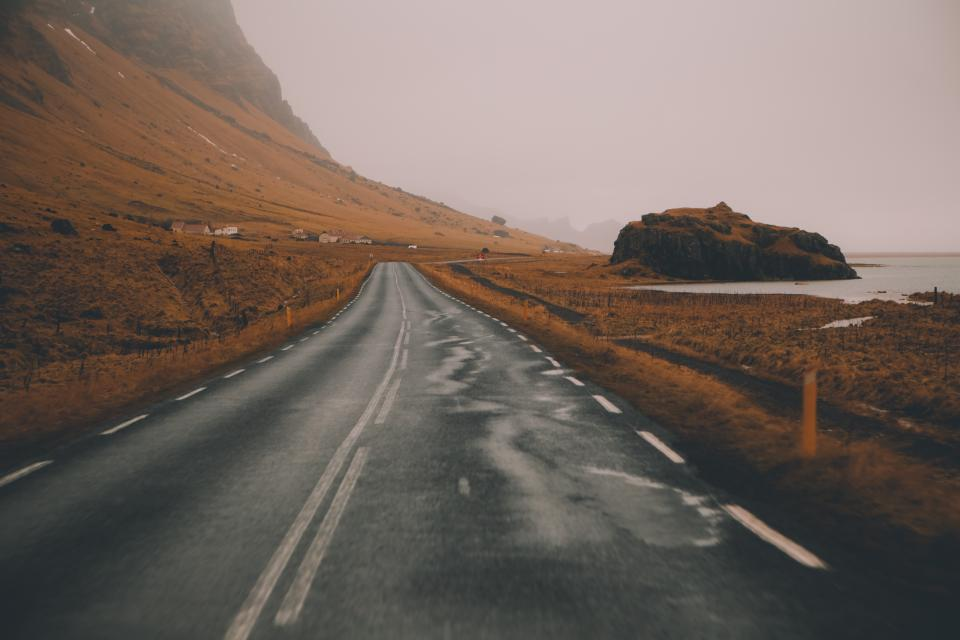
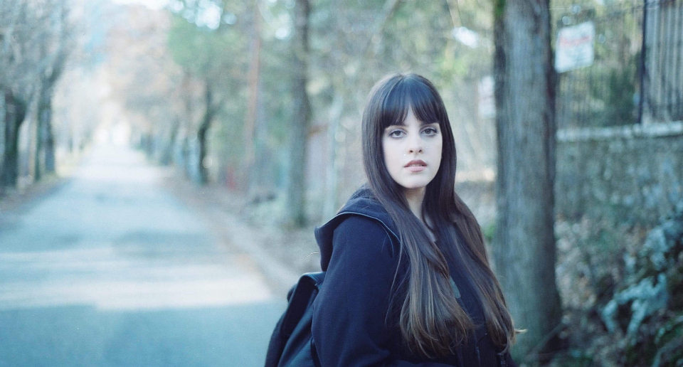
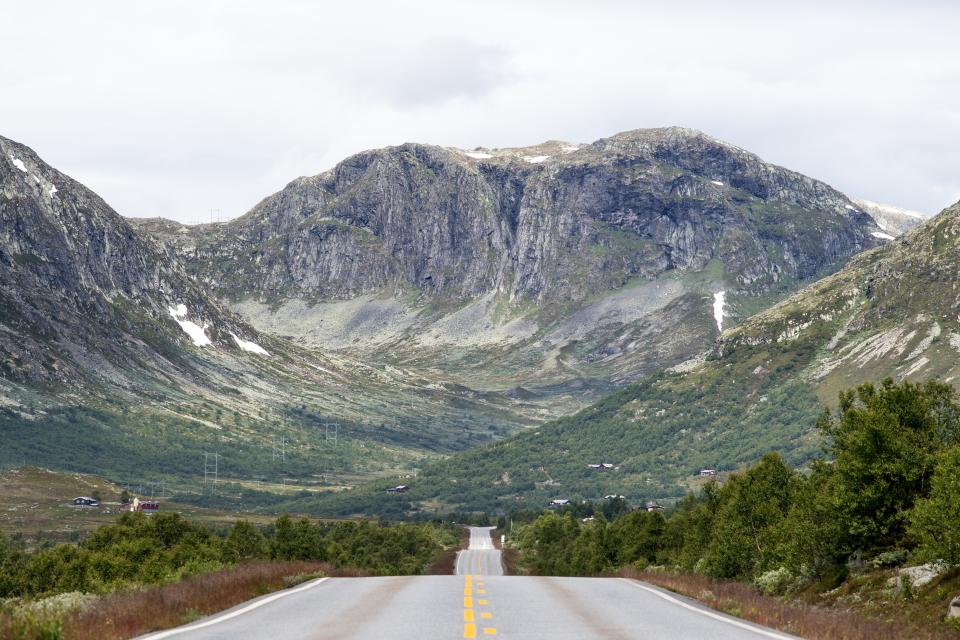
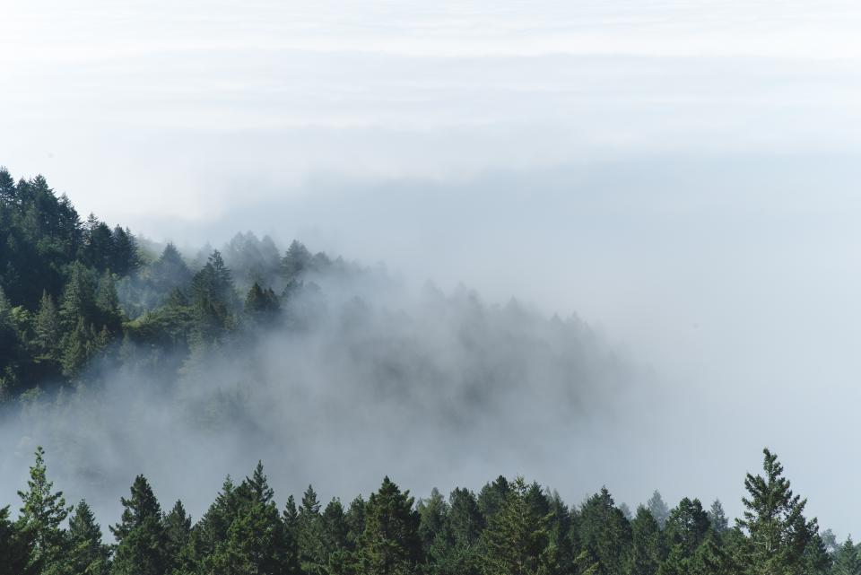

01 / JOURNEYREADING TIME / 12 MIN

CORDILLERA ADMINISTRATIVE REGION
17.0832° N / 120.8995° E
The long road north
Three days through rain, mountain roads and towns that disappear into cloud before noon.
Read the journey ↗
Field Note 021
17.0832° N / 120.8995° E
We follow roads until they become footpaths, and footpaths until they become stories. Sierra Madre documents the quiet geography of moving through a place.

CORDILLERA ADMINISTRATIVE REGION
17.0832° N / 120.8995° E
Three days through rain, mountain roads and towns that disappear into cloud before noon.
Read the journey ↗
A photographic sequence from the eastern face of the range.




“You learn the weather by listening to what becomes quiet.”
A morning with Mara Villanueva, a guide who has walked these ridgelines for more than thirty years.
Read the conversation ↗
Benguet → Ifugao
142 km / 7 hours

A breakfast assembled slowly: mountain rice, smoked fish, sharp coffee and fruit brought down before sunrise.
At every stop, a table becomes a map. Ingredients trace rivers, seasons, family gardens and the distance between one town and the next.
Read at the table ↗

Stories and photographs from journeys across the islands.
Explore issue 01 ↗